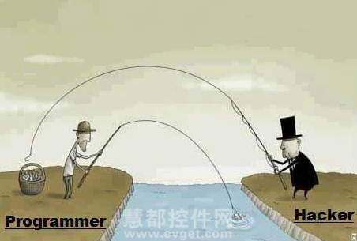

ハッカーとプログラマーの違い

- 1. ハッカーはプログラマーの部分集合である。
- 2. プログラマーは既に解決済みの問題を解決している。一方、ハッカーは通常、新しい問題を解決しようとしている。
- 3. プログラマーは職業であり、ハッカーは趣味である。
- 4. プログラマーの仕事には多くの制限があるが、ハッカーは思う存分に発揮できる。
- 5. プログラマーは自分を良く見せようとする。なぜなら自分を売り込む必要があるからだ。一方、真のハッカーはより謙虚で、自分はまだ十分に理解していないと分かっている。
- 6. プログラマーは一種の「職責」であり、必要とされるのはプログラミング言語の使用であって、なぜこの仕事をするのかを探求するよりも、できるだけ早く仕事を完了させることを望む。プログラマーであることは何も悪いことではないが、人生にはプログラミングよりも重要なことがたくさんある。反対に、ハッカーは一種の「マインドセット」であり、技術に対して非常に大きな好奇心を持ち、核となる動作原理を理解したいと望み、創造することを好む。どのように機能するのか、どうすればより良くできるのか、どうすれば物事を特別にできるのかを理解しようとする。ハッカーは芸術家や哲学者のような存在であり、同時に科学や工学の才能を持ち、多くの「なぜ」と「なぜそうしないのか」を持っている。
- 7. プログラマーとハッカーは、まるで画工と芸術家、DIYerと職人、教科書的なやり方と革新的なやり方のような関係だ。
- 8. プログラマーの目標はプログラムを書き、要件を満たすことだが、ハッカーはプログラムを自分のために使い、自身のニーズを満たそうとする。
- 9. プログラマーもハッカーもコードを書いているが、ただハッカーは不可能を可能に変えているのだ。
- 10. プログラマーのコード：
-
#ifndef __A_B___S__LIB_____2___ #include "mything3.h" #include "mything4.h #include "lib/bicycle.h" #include "lib/noodle.h" #endif #ifndef __A_B___S__LIB______4__ #include "mything1.h" #include "mything2.h" #include "lib/mything3.h" #include "lib/spaghetti.h" #endi
一方、ハッカーのコード：#include "myhack.c"
クリックしてノートを共有
<p style="font-size:14px;">笔记需要是本篇文章的内容扩展！</p><br> <p style="font-size:12px;"><a href="../tougao.html" target="_blank">文章投稿，可点击这里</a></p> <p style="font-size:14px;"><a href="./runoob-user-test-intro.html" target="_blank">注册邀请码获取方式</a></p> <h3 class="text-muted"><i class="fa fa-info-circle" aria-hidden="true"></i> 分享笔记前必须<a href=".." class="runoob-pop">登录</a>！</h3> <p><a href="./runoob-user-test-intro.html" target="_blank">注册邀请码获取方式</a></p>